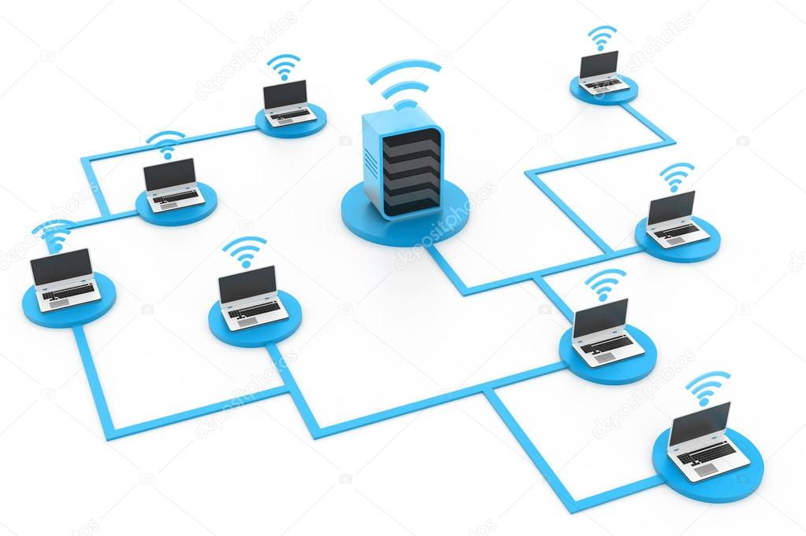

En informática, se entiende por red (usualmente red informática o red de computadoras) a la interconexión de un número determinado de computadores (o de redes, a su vez) mediante dispositivos alámbricos o inalámbricos que, mediante impulsos eléctricos, ondas electromagnéticas u otros medios físicos, les permiten enviar y recibir información en paquetes de datos, compartir sus recursos y actuar como un conjunto organizado.
Las redes cuentan con procesos de emisión y recepción de mensajes, así como de una serie de códigos y estándares que garantizan su comprensión por los computadores conectados a la red (y no por cualquier otro)
LAN. Local Area Network (en inglés: “Red de Área Local”). Son las redes de menor envergadura, como las que podemos instalar en nuestro departamento. MAN. Metropolitan Area Network (en inglés: “Red de Área Metropolitana”). Se trata de redes de tamaño mediano, óptimas para un campus universitario o el edificio de una biblioteca o empresa de varios pisos, incluso para una porción de una ciudad. WAN. Wide Area Network (en inglés: “Red de Área Amplia”). Aquí entran las redes de mayor tamaño y alcance, como las redes globales o como Internet.
Existen tres modelos de topología u ordenamiento de una red: Redes en bus. También llamadas lineales, tienen un servidor a la cabeza de una línea sucesiva de clientes, y cuentan con un único canal de comunicación denominado bus o backbone. Redes en estrella. Cada computador posee una conexión directa con el servidor, que se halla en el medio de todas. Cualquier comunicación entre los clientes deberá pasar primero por el servidor. En anillo. También llamadas circulares, conectan a los clientes y al servidor en un circuito circular, aunque el servidor mantiene su jerarquía sobre el sistema.
Para instalar una red informática se necesitan los siguientes elementos: Hardware. Dispositivos y máquinas que permiten el establecimiento de la comunicación, como son tarjetas de red, módems y enrutadores, o antenas repetidoras en caso de ser inalámbricas. Software. Programas requeridos para administrar el hardware de comunicaciones, como es el Sistema Operativo de Redes (de siglas NOS: Network Operating System), y los protocolos de comunicación como TCP/IP. Servidores y clientes. Los servidores procesan el flujo de datos de la red, atendiendo a las peticiones de los demás computadores de la red denominados clientes o estaciones de trabajo. Estos permiten a los usuarios el acceso a la información de manera individual, compartiendo los recursos administrados por el servidor. Medios de transmisión. Esto alude al cableado o a las ondas electromagnéticas que, según sea el caso, sirven de medio a la comunicación del mensaje.